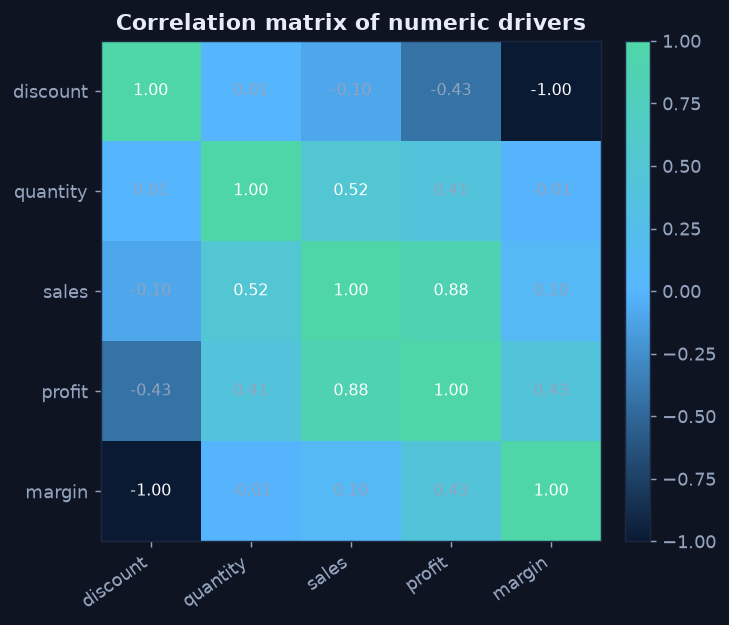
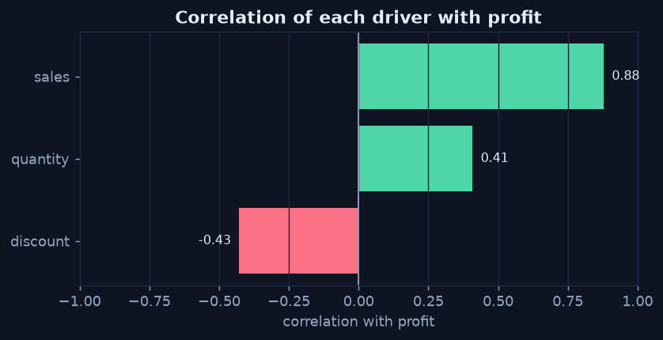

Correlating Drivers with the Target
Chapter 1 — The Fast First Pass
When a metric moves and you need to know why, the quickest first step is to ask which variables move together with it. A correlation coefficient between −1 and +1 measures the strength and direction of a linear relationship. Rank the candidate drivers by their correlation with the target and you have a short list of where to look — before spending time on any single hypothesis.
The Correlation Matrix — See Everything at Once
A correlation matrix computes the pairwise correlation among every numeric variable, so the whole web of relationships is visible in one view. On the retail data, profit is strongly negatively correlated with discount and perfectly tied to margin (because margin is, by construction, 0.30 − discount), while sales tracks quantity. That single picture already nominates discount as the prime suspect for low profit.
Python · pandas
cols = ["discount", "quantity", "sales", "profit", "margin"]
c = orders[cols].corr() # pairwise linear correlation
# render c with imshow + annotated cells (see chart)
Discount is strongly negatively correlated with profit and margin; sales tracks quantity. The driver to investigate is discount.
Rank Drivers Against the Target
For a single target — profit — pull just its column and sort. This turns the matrix into a priority list: the most negative (or most positive) driver is the first one worth a formal test. Here discount leads with a clear negative correlation, well ahead of quantity and sales.
Python · pandas
drivers = ["discount", "quantity", "sales"]
corr = orders[drivers + ["profit"]].corr()["profit"].drop("profit")
print(corr.sort_values()) # most negative = first suspect
A ranked correlation-to-target chart: discount is the strongest (negative) driver of profit at roughly −0.43.
Two Cautions Before You Trust a Correlation
- Correlation only sees linear relationships. A U-shaped effect can show a correlation near zero while still mattering — always look at the scatter, not just the number.
- A correlation is a clue, not a verdict. It tells you where to test, not what is true. The next chapter puts the leading suspect through a formal test.